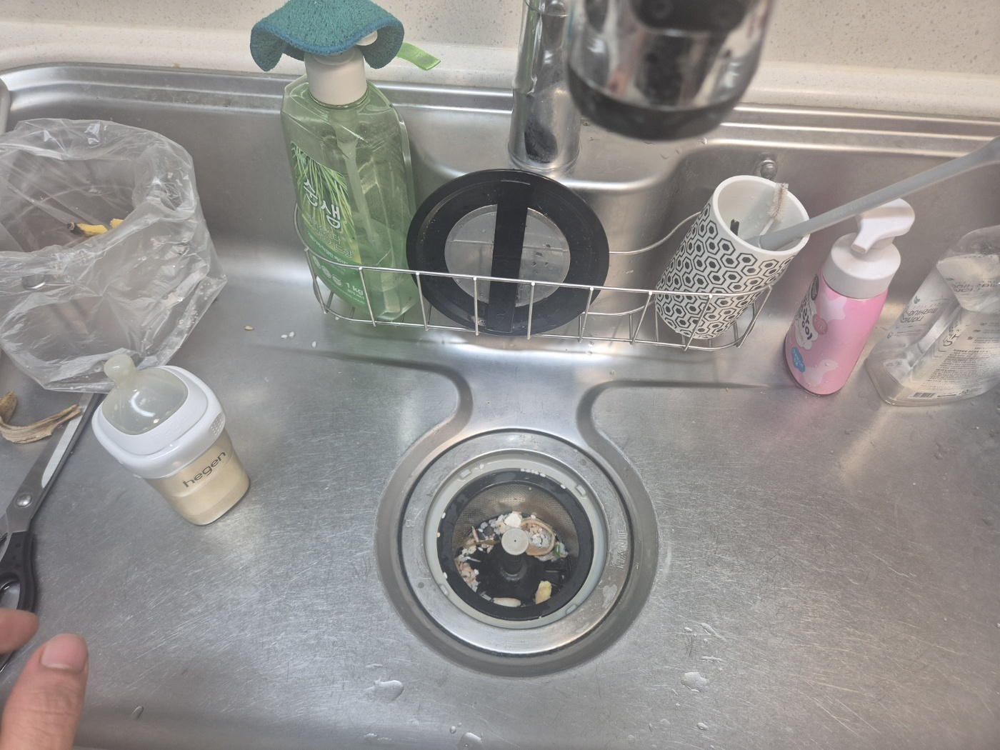
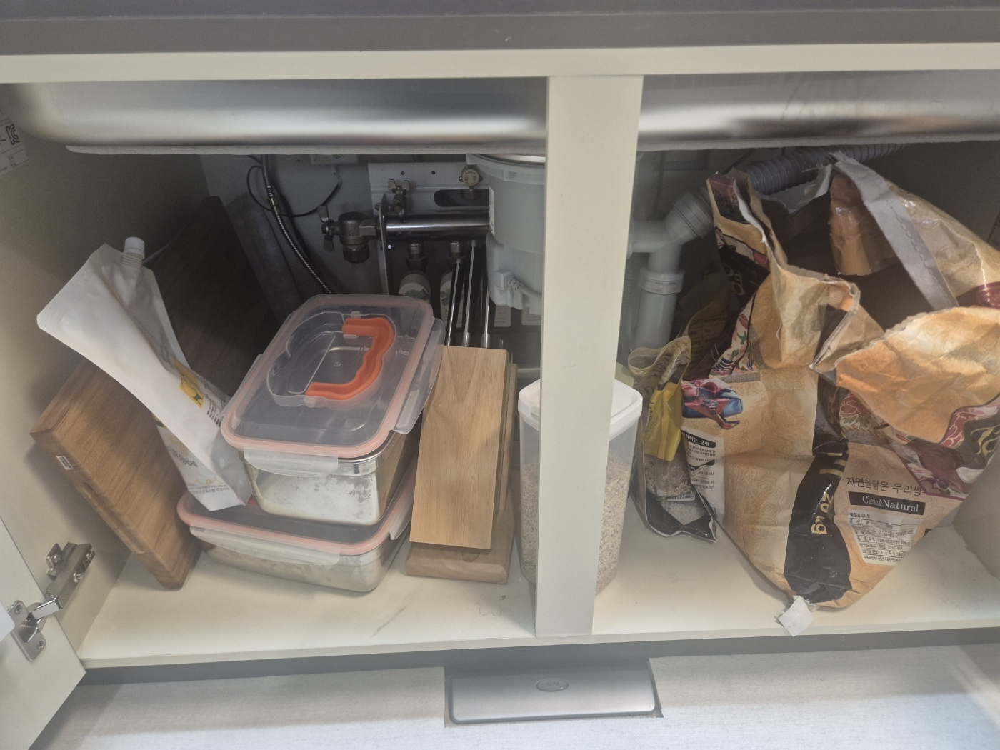
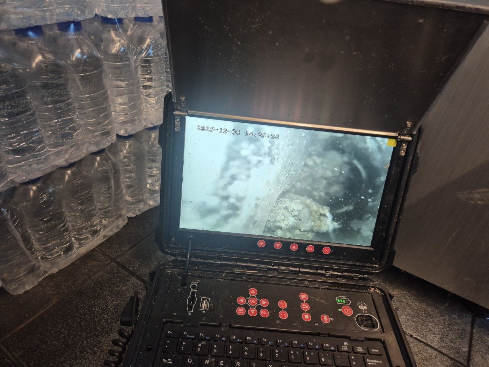
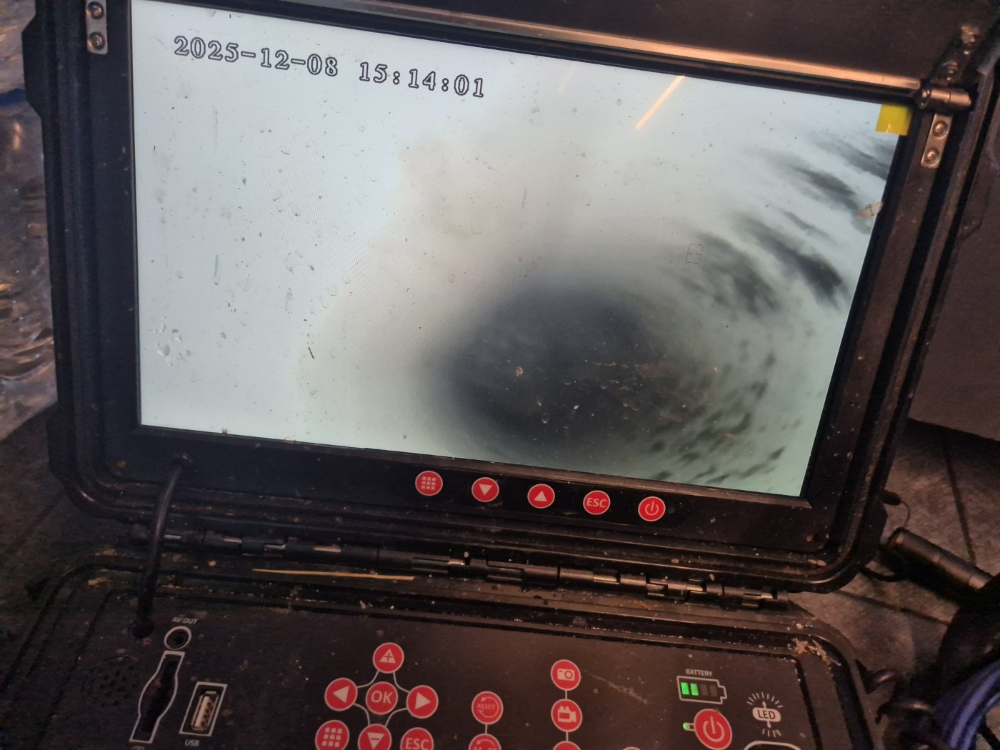

안녕하세요.. 고고고 설비입니다.. 오늘은 평택시 세교동에서 싱크대막힘 신고를 받고 다녀온 현장입니다. 아기 용품을 씻으시는 중에 물이 안 빠져서 놀라셨다고 하셨어요.
싱크대 배수구 거름망부터 열어서 확인했는데, 거름망 아래로 음식물 찌꺼기와 세제 거품이 뒤엉켜 고여있는 상태였습니다.. 물을 살짝 틀어보니 배수구 안쪽에서 물이 역류하듯 올라오는 게 보였어요.
거름망 쪽 문제만은 아닌 것 같아서 하부장 문을 열고 안쪽 배관과 밸브도 함께 확인했습니다. 좁은 공간에 쭈그려 앉아 연결부 하나하나를 손으로 짚어가며 점검했는데, 다행히 밸브 자체에는 이상이 없었어요.

육안으로는 정확한 막힘 위치를 찾기 어려워서 내시경 카메라를 배관 안쪽으로 넣었습니다. 화면이 뿌옇게 흐려질 정도로 이물질이 가득한 게 확인됐고, 카메라를 조금씩 밀어 넣을수록 화면이 더 어두워지는 걸 보고 안쪽까지 꽤 깊게 막혀있다는 걸 알 수 있었어요.

확인된 지점부터 이물질을 조금씩 걷어내며 배관 안쪽을 반복해서 세척했습니다. 중간중간 내시경으로 다시 확인해가며 남은 이물질이 없는지 꼼꼼하게 살폈어요.

작업을 마치고 물을 내려보니 배수가 정상적으로 시원하게 빠지는 걸 확인했습니다. 거품이 역류하던 모습은 온데간데없이 깨끗하게 내려가는 걸 직접 보여드렸어요.
싱크대 배관은 기름때와 세제 찌꺼기가 조금씩 쌓여 서서히 막히는 경우가 많습니다. 배수가 느려지는 초기 신호가 있을 때 미리 점검받으시는 걸 권해드립니다.
고고고 설비는 주택, 아파트, 원룸, 상가, 공장의 생활 하수 오수 배관을 관리해 주는 업체입니다. 고고고 설비에 전화 주시면 친절상담 정확한 진단 확실한 해결로 보답해 드리겠습니다!!